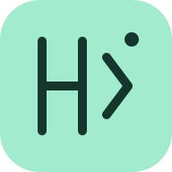

日本語訳は参考訳です。主張や数値は原文でもご確認ください。
標準のArgos翻訳は、GitHub Actionsで事前に生成します。未翻訳の論文は原文で表示します。専門用語や文の解釈が不自然な場合は原文を確認してください。
アプリにAPIキーを入力する必要はありません。DeepLを使う場合は、リポジトリの設定とGitHub Secretsを使います。
保存・既読はこのブラウザだけに記録されます。端末を変える前に書き出してください。読み込みは現在の記録に追加します。
ホーム画面から開く場合とブラウザのタブでは、保存先が別になることがあります。利用する開き方を統一してください。
書き出しには、検索で絞り込んだ論文ではなく保存した全件を含みます。